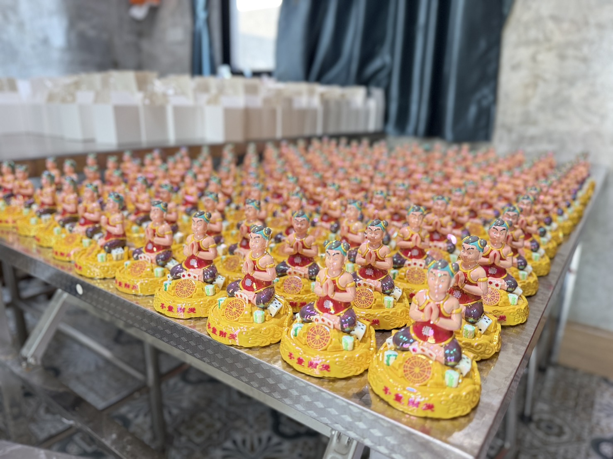
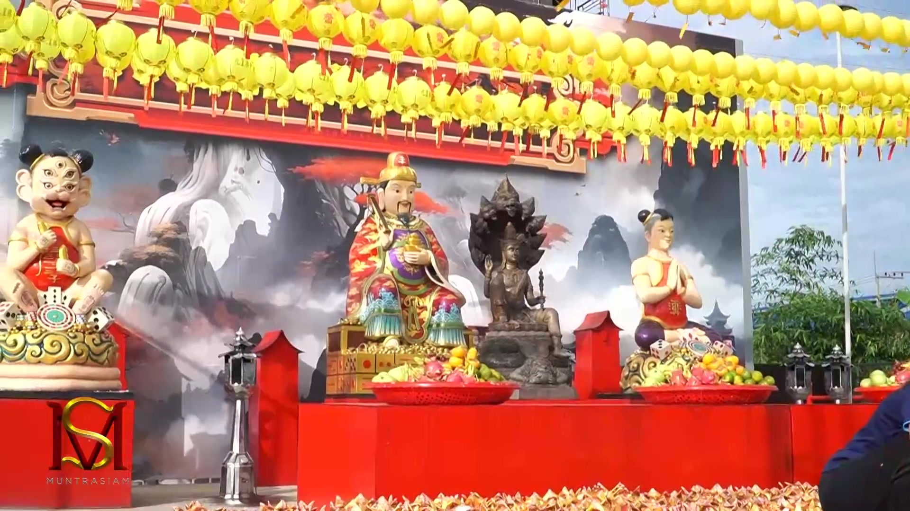

มหาพุทธา–เทวาภิเษก · ตำนานเมืองโคราช
อ.แขก มันตระสยาม ในพิธี “ตำนานเมืองโคราช เจริญสุข ๙๐” พร้อมภาพสายสิญจน์ พระสงฆ์ และบรรยากาศภายในพื้นที่พิธี
44 วินาที · ภาพจากช่องมันตระสยาม เผยแพร่ 11 มิถุนายน 2569MUJEEN · STORIES
บันทึกการจารทีละองค์ พิธีกรรม และผู้คนแห่งศรัทธา
ผ่านเรื่องราวของ อ.แขก มันตระสยาม
PERSONAL INSCRIPTIONS
หลังบรรจุมวลสาร อ.แขก มันตระสยาม จารลงยันต์และอักขระบนองค์เทพอีกครั้ง ทีละองค์ ด้วยความตั้งใจในทุกรายละเอียด
“จาร” ในขั้นตอนนี้ หมายถึงการลงยันต์และอักขระอีกครั้งหลังใส่มวลสาร เป็นงานที่อาจารย์ลงมือกับองค์เทพแต่ละองค์ ก่อนการดูแลและจัดเตรียมเพื่อส่งต่อให้ผู้บูชา



THE TEACHINGS
ทำความรู้จักองค์ศิลป์ภายใต้แบรนด์ MUJEEN และวิชาฮวงจุ๋ยเต๋าเหมาซานที่ อ.แขก มันตระสยาม นำมาใช้ในการประกอบพิธี การเตรียมมวลสาร และการจารทีละองค์ เพื่อเข้าใจคุณค่าของคอลเลกชันอย่างรอบด้าน
เปิดรับจองเป็นรอบ ตามช่วงเวลาที่ประกาศ
รู้จักองค์ศิลป์และพิธีกรรมเบื้องหลังDOOR GUARDIANS
คู่เทพประตูในคติจีน สื่อถึงการคุ้มครองบ้านและความเป็นสิริมงคล ติดตั้งเป็นคู่บริเวณประตูทางเข้า เป็นอีกบทของการดูแลพื้นที่แห่งศรัทธา
เหม่งซึ้งเป็นองค์เทพอีกกลุ่มหนึ่งสำหรับการบูชาเสริม ควบคู่กับการทำความเข้าใจองค์เทพทั้งสาม
รู้จักเหม่งซึ้งและตำแหน่งจัดวาง ↗
THE WORLD OF MUJEEN
ณ วิหารเซียนมันตระสยาม


A PLACE OF DEVOTION
ร่วมสักการะและขอพร
ณ วิหารเซียนมันตระสยาม
บันทึกบรรยากาศแห่งศรัทธา ณ วิหารเซียนมันตระสยาม ในช่วงก่อสร้าง ปัจจุบันการก่อสร้างวิหารแล้วเสร็จสมบูรณ์
THE TEACHER & THE COMMUNITY
จากรูปองค์ที่ตั้งอยู่ในวิหาร สู่พิธีที่ผู้คนเข้ามาร่วมกัน ภาพเหล่านี้บันทึกอีกมุมของมันตระสยาม ผ่าน อ.แขก และผู้ร่วมพิธีในสถานที่จริง
ชมเรื่องราวพิธีกรรม
ภาพพิธีอาบน้ำมนต์: ทีซีนิวส์สเตชั่น · 29 มิถุนายน 2569 ↗
RITUAL ARCHIVE
บันทึกพิธีกรรม 6 เรื่อง พร้อมคำบรรยายประกอบไทย จีน และอังกฤษ เพื่อทำความเข้าใจภาพและบริบทของแต่ละพิธี
อ.แขก มันตระสยาม ในพิธี “ตำนานเมืองโคราช เจริญสุข ๙๐” พร้อมภาพสายสิญจน์ พระสงฆ์ และบรรยากาศภายในพื้นที่พิธี
44 วินาที · ภาพจากช่องมันตระสยาม เผยแพร่ 11 มิถุนายน 2569ภาพพิธี “สี่หูห้าตามหากำเนิดดวงมหาจักร” จากช่วงกลางวันสู่การจุดเทียนยามค่ำ เห็น อ.แขก ขณะร่วมประกอบพิธี
44 วินาที · ภาพจากช่องมันตระสยาม เผยแพร่ 21 มีนาคม 2565จากภาพการตีฆ้องและเครื่องบูชา สู่การจัดเตรียมและความเคารพของผู้ร่วมพิธี
44 วินาที · ภาพจากช่องมันตระสยาม เผยแพร่ ปี 2567บรรยากาศพิธีที่ อ.แขก มันตระสยาม ประกอบให้ผู้เข้าร่วม พร้อมภาพเศียรครูและรายละเอียดในพื้นที่พิธี
44 วินาที · ภาพจากช่องมันตระสยาม เผยแพร่ 19 สิงหาคม 2568จากภาพแสงไฟและแถวตะเกียง สู่การจัดเตรียมและการประกอบพิธี โดย อ.แขก มันตระสยาม
ภาพจากช่องมันตระสยาม เผยแพร่ปี 2024รายละเอียดของการเตรียมพิธี ลายจาร เครื่องสักการะ และการร่วมประกอบพิธีในพื้นที่วิหาร
ภาพจากช่องมันตระสยาม เผยแพร่ปี 2025คำบรรยายทั้งสามภาษาเป็นข้อความเรียบเรียงประกอบภาพ ไม่ใช่คำแปลเสียงพูดแบบคำต่อคำ ภาพพิธีเก่าใช้เล่าบริบทมันตระสยาม ไม่ใช่บันทึกพิธีของรุ่น MUJEEN
COMMUNITY STORIES
บทสัมภาษณ์จากช่องมันตระสยาม ครอบครัวผู้ถูกรางวัลเล่าประสบการณ์ของตนเอง ร่วมกับ อ.แขก มันตระสยาม
ในคลิป ครอบครัวเล่าถึงการถูกรางวัลที่ 1 จำนวน 5 ใบ รวม 30 ล้านบาท และความผูกพันกับ อ.แขก ข่าวเดลินิวส์วันที่ 7 พฤศจิกายน 2568 รายงานเรื่องเดียวกัน โดยระบุว่ารางวัลเป็นของคุณแม่ในครอบครัว
THE MUJEEN PHILOSOPHY
MUJEEN ชวนให้เริ่มจากความหมายขององค์เทพ แล้วทำความรู้จักเอกลักษณ์ของคอลเลกชัน งานศิลป์ และพิธีกรรมที่อยู่เบื้องหลังการบูชา
ภาพการจารและการบรรจุมวลสารทีละองค์ เชื่อมเรื่องราวความเชื่อเข้ากับการลงมือทำอย่างเป็นรูปธรรม